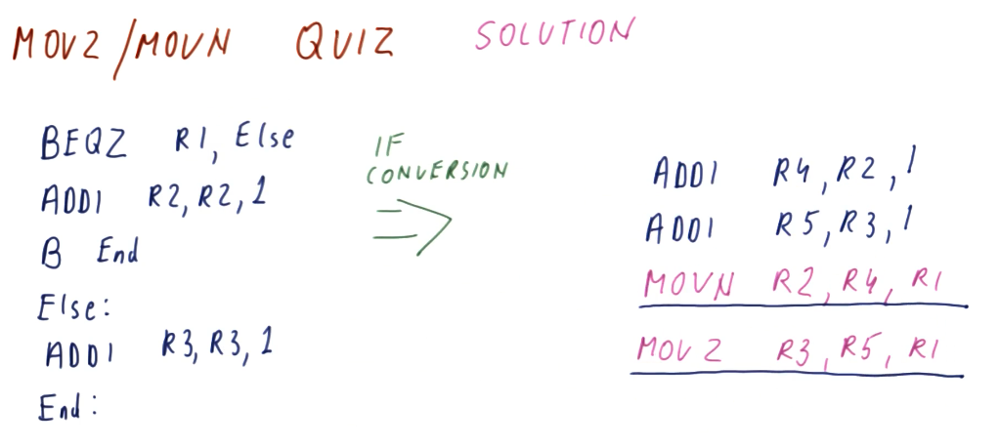
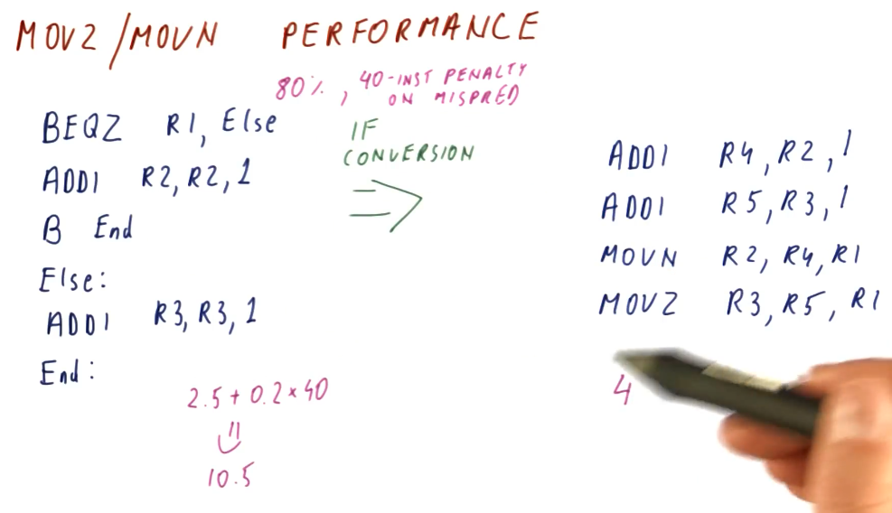
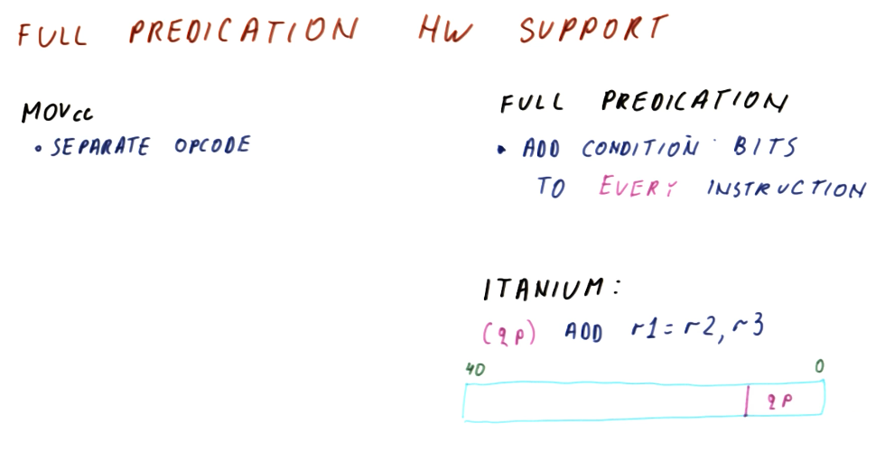
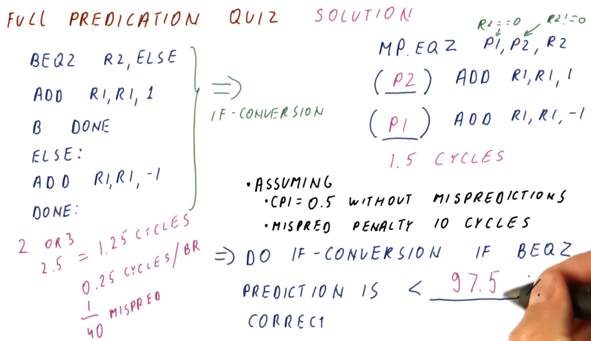

Predication
Summary
This lesson covers more topics in relation to control dependencies and the hazards they pose. We covered a bunch of different branch predictors in lesson 4 and we noticed that some branches are really difficult to predict, even when we use really sophisticated branch predictors.
This lesson showcases how the compiler can help us to completely avoid hard to predict branches.
Predication explained
Like we covered in the previous lesson, with branch prediction we attempt to guess the landing location of the branch and we begin fetching instructions from that instruction sequence into the pipeline. If we are correct in our guess, we incur no penalty. An incorrect guess incurs a penalty and, depending upon how long our pipeline is, this penalty can be huge.
Contrast this with predication. In predication, we fetch instructions from the instruction sequences of both possible landing locations for a branch. With this technique, even if we guess correctly or incorrectly, we still have to toss out 50% of the instructions that have been fetched into the processor pipeline. We don't incur a penalty anymore, however, because we realistically aren't making a guess, we're just saying yes to both outcomes of a branch instruction.
So if we're always incurring a penalty with predication, in what context is it better than branch prediction? Here is a breakdown of the examples showcased in the lecture:
- Loops - best application is a branch predictor. Loops are easier to predict as the number of iterations increases. With predication, we would be continuously fetching instructions from the instruction sequence after the loop, wasting a lot of effort as those instructions will continuously flushed from the pipeline - the branch that goes back into the loop will be taken almost always.
- Function calls/ret - best application is a branch predictor. The function will always return, taking the branch instruction. No reason to fetch instructions from the instruction sequence after a ret.
- Large decision statements (if-then-else) - best application is a branch predictor, dependent upon the size of the instruction sequence that comprises the decision statement and the length of the processor pipeline. If two directions in a decision statement were both 100 instructions long and the processor pipeline was 50 stages long, if we mis-predict we only incur a penalty of 50 stages. If we predict correctly, we incur no penalty. In contrast, a predicator will always incur the penalty of 100 because we load instructions from both possible instruction sequences following the branch instruction.
- Small decision statements (if-then-else) - the best application is predication. If two instruction sequence outcomes for a branch are both 5 instructions long, we will always incur a 5 instruction penalty with predication. If we use branch prediction and the processor pipeline is 50 stages long, if we make a mis-prediction, we'll have wasted 50 stages. Dependent upon how accurate the branch predictor is, we might be able to match the performance of predication in this use case, however, the more inaccurate the branch predictor the less viable an option it will be for small decision statements.

Conditional move
This section discusses the conditional move instructions available in the MIPS
and x86 instruction sets. The example below covers MOVZ and MOVN:
MOVZ- takes two sources and a destination register. If the third operand is equal to0, the second operand is loaded into the destination register.MOVN- takes two sources and a destination register. If the third operand is not equal to0, the second operand is loaded into the destination register.
Example x86 CMOV instructions are shown below.

MOVZ MOVN quiz
Below is quiz a on how to convert code that originally contains branch instruction into code that uses conditional moves to avoid making predictions. This code models a short decision statement that loads some values into different variables based upon some condition statement.

MOVZ MOVN performance
The excerpt from the lectures below showcases a comparison of the performance
between traditional branch prediction and the translation we did of the
instructions to enable predication. Give a branch predictor that's correct
80% of the time and incurs a 40 instruction penalty if we encounter a
mis-prediction, we average the number of instructions that can executed between
the two branch instruction sequences, 5 * 0.5 == 2.5, and then we throw in our
inaccuracy and penalty: 2.5 + 0.2 * 40 == 10.5.
So, on average, the branch predictor in this example incurs 10.5 instructions
worth of work to evaluate and execute this condition statement. In contrast, for
predication, all of the instructions are fetched and executed because we've
translated the branch into conditional move instructions. We incur 4
instructions worth of work to evaluate and execute this condition statement.

MOVx summary
To summarize predication using MOVx:
- Needs compiler support to translate eligible condition statements using
MOVxinstructions rather than generating branch instructions - Removes hard-to-predict branches, increasing performance
- More registers are needed in order to support predication using
MOVx- Results from both instruction sequences have to be calculated and stored
- More instructions are executed
- No branch prediction is conducted, both instruction sequences are executed and their results are stored in registers
MOVxis used to select the results of the condition statement
So what portions of this summarized list are absolutely necessary to implement predication? Well:
- Compiler support is definitely necessary
- The whole purpose of this is to remove hard-to-predict branches
- We don't need more registers to store our results - we can conduct comparison directly against values in memory
- We don't need to use
MOVxto select results
How do we remove the unnecessary portions of the summarization above? We make all of our instructions conditional! With this, we can achieve full predication - but it requires extensive support in the instruction set.
Hardware support for full predication
Usually, we have a separate opcode for conditional move instructions. For full predication, we add condition bits to every instruction. Below is an excerpt from the lectures showcasing the Itanium instruction set's use of qualifying predicates in its instructions to support full predication. Qualifying predicates specify what register will be used to conduct a comparison for a conditional move.

Full predication example
The excerpt below now shows our previous condition statement convert to a set
of instructions that uses full predication. The first instruction sets the
qualifying predicates, p1 and p2, to 0 or 1 based upon the value of R1
. If R1 is 0, p1 is set and the instruction predicated by p1 will
actually store its value into R3 after execution. If R1 is not 0, p2 is
set and the instruction predicated by p2 will store its value into R2 after
execution.
So, in the original code with branch instructions, we have the possibility of
executing 2 or 3 instructions based upon our prediction, but we still incur a
penalty. In our previous examples using MOVx, we were able to translate the
condition statement into a set of 4 instructions. Now, with hardware support for
full predication, we are able to translate this condition statement into 3
instructions.

Full predication quiz
Below is a the full predication quiz solution from the lecture, conducting a performance comparison between the original branch version of the condition statement code to the full predication translation.
